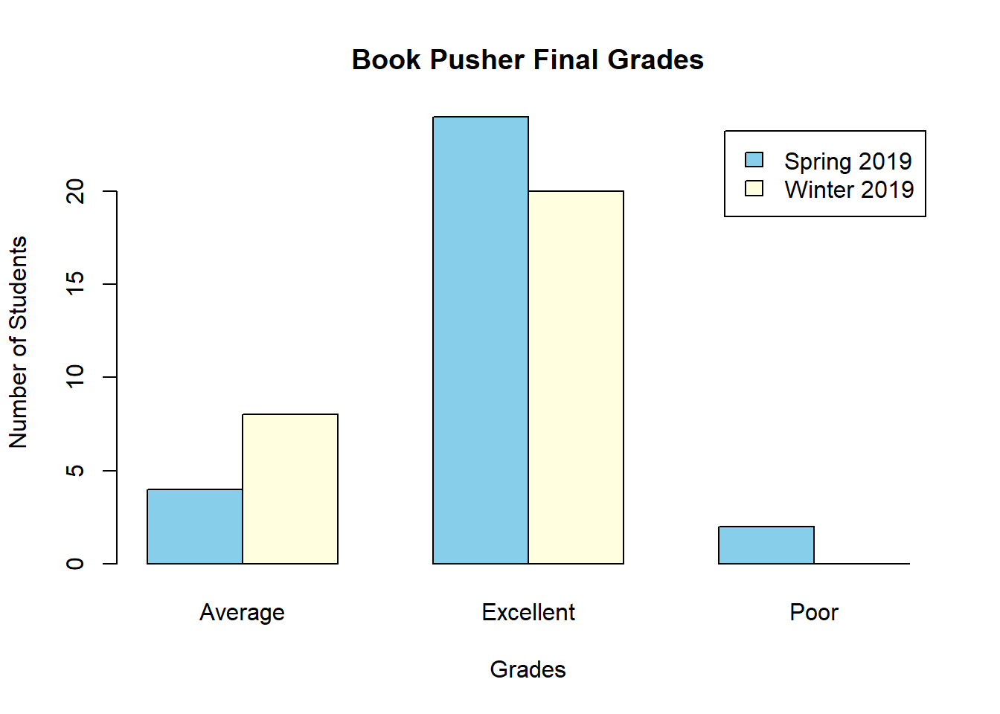

The teacher understands how learners grow and develop, recognizing that patterns of learning and development vary individually within and across the cognitive, linguistic, social, emotional, and physical areas, and designs and implements developmentally appropriate and challenging learning experiences.
Candidates know developmental stages.
This assignment is lesson planning to teach four genres of writing: fiction, personal narrative, argumentation, and research. You will plan through five stages, which roughly correspond to pre-writing, writing, editing/evaluation. This will happen in five stages. A sample of this assignment will be provided.
Samples:
Excellent performance: Fall ’19 / Winter ’20
Average performance: Fall ’19 / Winter ’20
Poor performance: Fall ’19 / Winter ’20
You must convince your professor that the books you chose will really work for those tough people in those three groups. You will come to Sister Glenn’s office (Rigby 304) or Sara’s office (Rigby 101) on your scheduled test day and time. You will come in, sit down, and roll the die. The number you roll, will indicate which group (1 and 4=young adult, 2 and 5=parent, and 3 and 6=future 356 class) and which three of the nine books you will discuss. After the roll of the die, you will have 10 minutes to talk. You must address these three things in your spiel:
Sample:

As you complete Goodreads, look up and record the Lexile level of each book.
As you complete the 25 books, imagine recommending a series of five books to a specific student. Determine the grade level and gender of the imagined student you want to write your text set for. Then, choose five books that increase in Lexile level and which are connected thematically in a way that would make sense reading them in the order you recommend.
List the five books and their Lexile level. For each book, give a rationale for why you would recommend that book for that student.
Samples:
Candidates know how adolescents read.
You will sign up for one of the following topics:
Find at least three scholarly journal articles on that topic and compile the information into an annotated bibliography. Use MLA formatting for citation purposes. owl@purdue.edu will help you organize your annotated bibliography.
Samples:
1.Excellent performance: Fall ’19/ Winter ’20.
2.Average performance: Fall ’19 / Winter ’20.
3.Poor Performance: Fall ’19/ Winter ’20.
Publishers, editors, writers, and teachers work together when it comes to using Young Adult Literature in a classroom. Any of these groups of people post teaching ideas online. For this literature circle role, you will create a document that gives links and advice on teaching a Young Adult novel.
Parts of the LitLinks:
Samples:
Excellent performance: Fall ’19 / Winter ’20
Average performance: Fall ’19 / Winter ’20
Poor performance: Fall ’19 / Winter ’20
This semester you will read 20 YA books.Many of these are not difficult to read, but it is essential that you keep up with both the reading and the assignments. In order to stay on top of things, plan to read two books per week. That pace should keep you from grief at the end of the semester. (10 points per book, 200 total/20 points for the Reading Record)
20 books:
NOTE: Please do not read books in which you have already read or seen the movie (Harry Potter series, Hunger Games series, The Giver quartet, Maze Runner series, Twilight Series, etc.). Where you are already familiar with these books/movies, do yourself a favor and branch out—read something new. This will benefit you in the end.
Samples:
Excellent Performance: Fall ’19 / Winter ’20
Average Performance: Fall ’19 / Winter ’20
Poor Performance: Fall ’19 / Winter ’20
Candidates know how adolescents compose texts.
Each student will participate in developing a group writing unit. Each student will be responsible for a personal section of the unit, as well as the overall unit. Each group will develop a unit for a specific type of writing, complete with goals, pre-writing and writing activities, a technology piece, evaluations/assessments, and accommodations for students. The group will establish goals for the writing unit, a reflective piece, and a rubric for grading the writing. The individual members of the group will each find or develop pre-writing activities, writing activities, evaluations/assessments and accommodations for students. Each student will receive both an individual and a group grade.
Samples:
You will sign up for one of the following topics:
Find at least three scholarly journal articles on that topic and compile the information into an annotated bibliography. Use MLA formatting for citation purposes. OWL@Purdue.edu will help you organize your annotated bibliography.
Samples:
Excellent Performance: Fall ’19 / Winter ’20
Average Performance: Fall ’19 / Winter ’20
Poor Performance: Fall ’19 / Winter ’20
This assignment is lesson planning to teach four genres of writing: fiction, personal narrative, argumentation, and research. You will plan through five stages, which roughly correspond to pre-writing, writing, editing/evaluation. This will happen in five stages. A sample of this assignment will be provided.
Samples:
Excellent performance: Fall ’19 / Winter ’20
Average performance: Fall ’19 / Winter ’20
Poor performance: Fall ’19 / Winter ’20